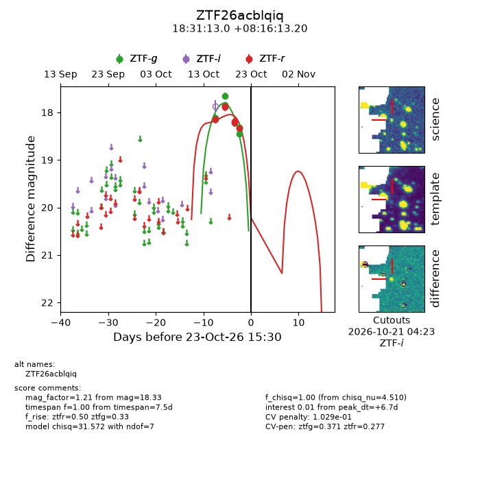
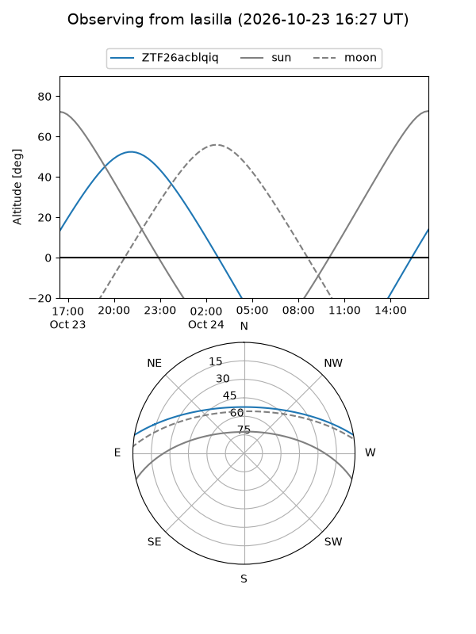
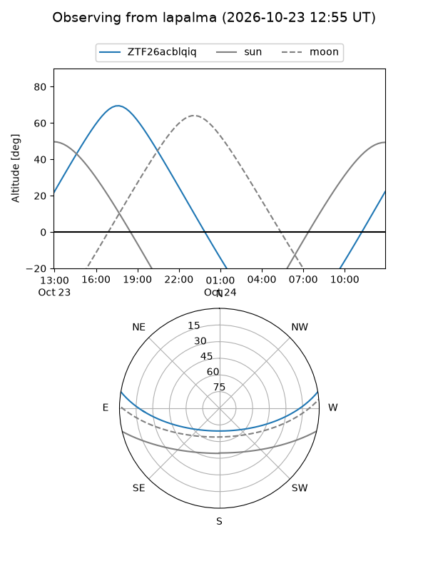
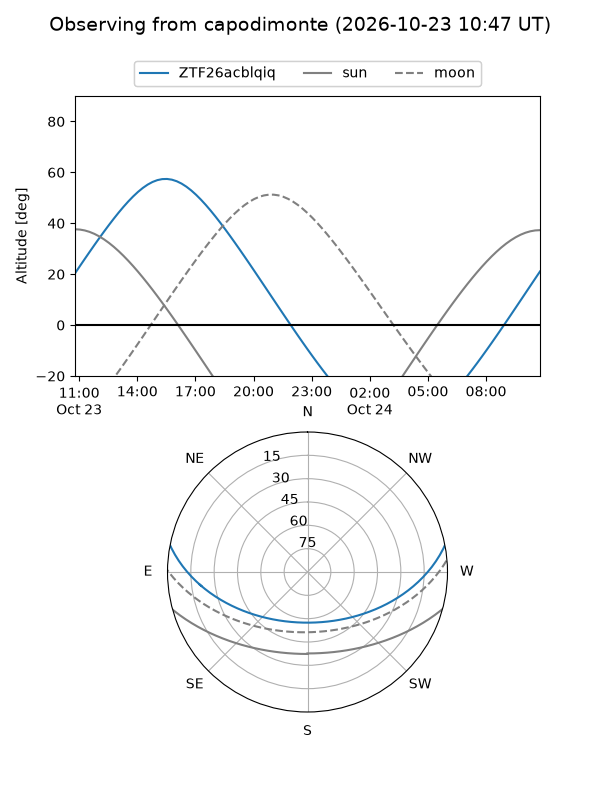
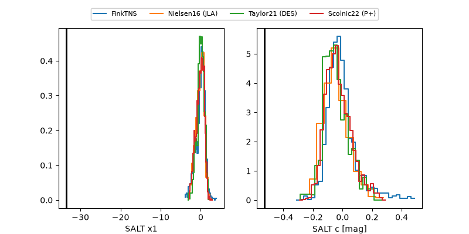

ZTF26acblqiq
Target ZTF26acblqiq at 2026-10-23 15:32
Aliases and brokers:
FINK-ZTF: ztf.fink-portal.org/ZTF26acblqiq
Lasair-ZTF: lasair-ztf.lsst.ac.uk/objects/ZTF26acblqiq
ALeRCE-ZTF: alerce.online/object/ZTF26acblqiq
Direct TNS query: direct search
alt names
ZTF26acblqiq (ztf,fink_ztf)
Coordinates:
equatorial (ra, dec) = 277.8042,+8.27033
equatorial (HMS+DMS) = 18:31:13.01,+08:16:13.20
galactic (l, b) = (38.0482,+8.23292)
Flags:
likely cv: !!
CV pen: 0.10290232765368434
peak dt: +6.7
Photometry:
last ztfg=18.44, ztfr=18.33
4 ztfg, 5 ztfr detections
Lightcurve

Visibility



Additional plots
